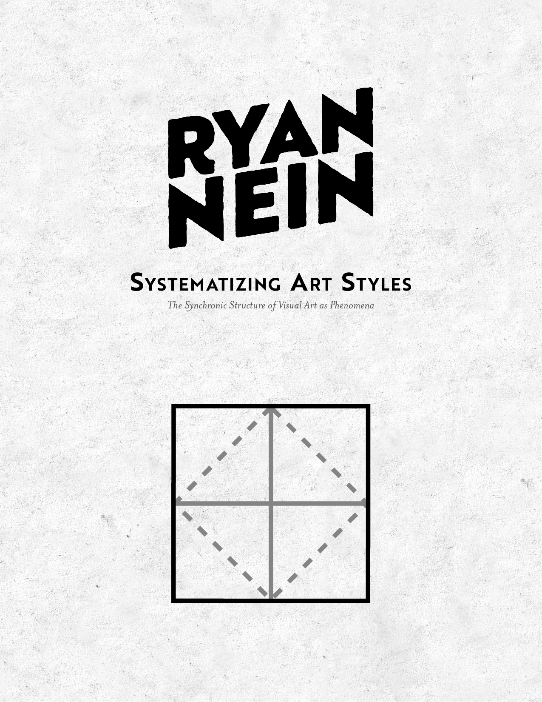
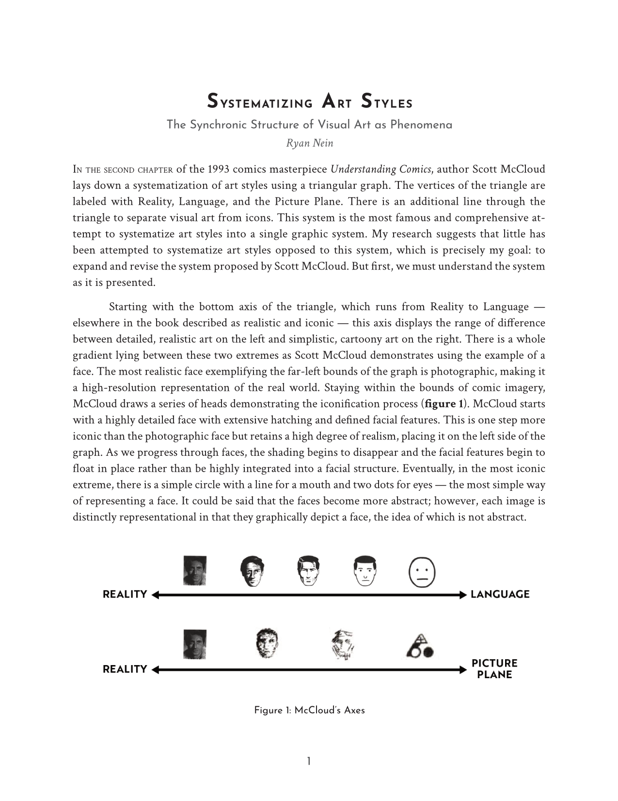
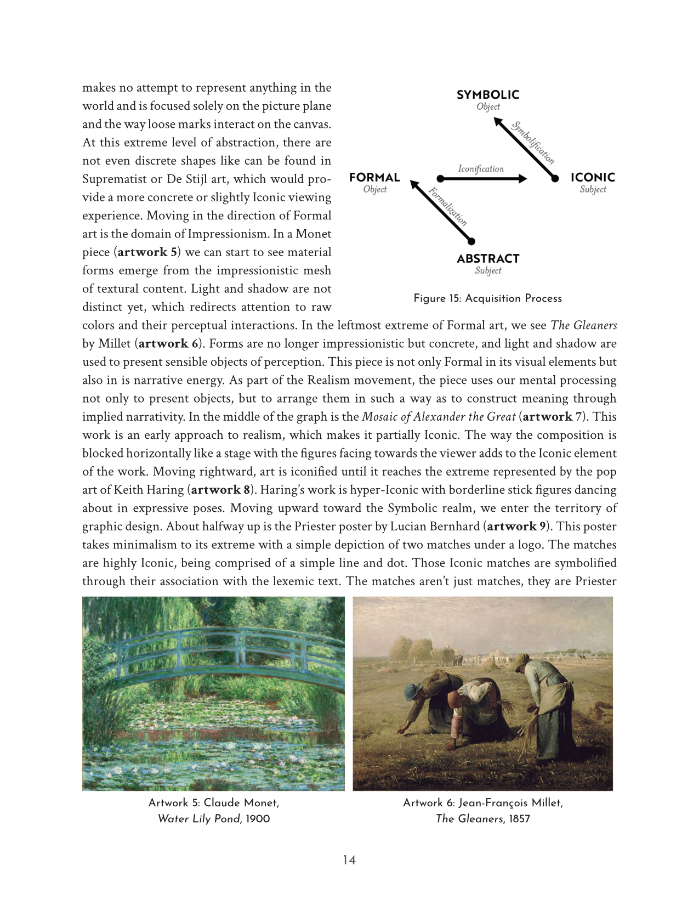
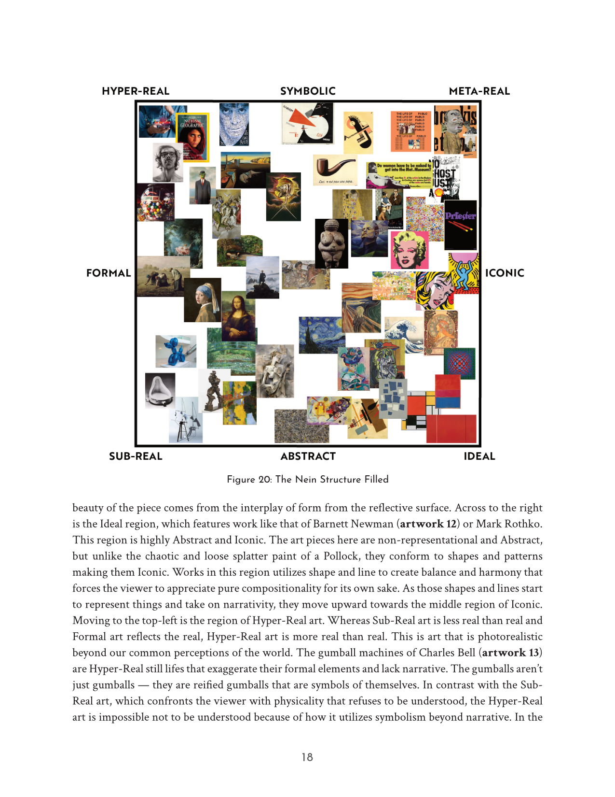

Systematizing Art Styles
his video presents a structured way of understanding art styles by expanding Scott McCloud’s well‑known “art triangle” from Understanding Comics into a more complete cognitive map of how we perceive images. Instead of treating style as a loose aesthetic category, the system reframes it as a sequence of mental operations the viewer performs when turning raw marks into meaning.
Summary
The framework begins by adding a fourth vertex to McCloud’s triangle, transforming it into a diamond. Each point represents a stage in the phenomenological acquisition of an image:
Abstract — the raw, pre‑interpreted state of all art, where marks exist without objecthood or narrative.
Formal — the mind’s first objectifying step, using light, value, and spatial cues to turn abstract marks into recognizable three‑dimensional forms.
Iconic — the re‑subjectification of those forms into simplified lines and shapes that appeal directly to perception.
Symbolic — the final stage, where images become lexemic units that require cultural knowledge to decode.
The video argues that all art begins as abstraction because, without the viewer’s interpretive effort, even the most realistic painting is nothing more than pigment arranged on a surface. Meaning arises only when the mind actively organizes those marks into objects, icons, and symbols. Truly abstract art is unique because it resists this process, forcing the viewer to confront the fundamentals of mark‑making rather than slipping into automatic recognition.
Building on the diamond, the system expands into a square graph that captures additional stylistic tendencies:
Sub-Real — reality presented without narrative or interpretive framing.
Hyper-Real — imagery that intensifies realism beyond the real, often seen in commercial or highly detailed work.
Meta‑Real — iconic forms arranged to produce symbolic associations, such as collage or conceptual assemblage.
Ideal — compositions that emphasize harmony, abstraction, and formal clarity.
Together, these structures map how art moves between subjectivity and objectivity, showing that style is not just a visual category but a record of the viewer’s cognitive journey. Whether examining Pollock’s refusal of objecthood or El Lissitzky’s symbolic constructivism, the system provides a way to understand how different artworks relate through the mental processes required to perceive them.
PDF Preview
This essay is available as a downloadable PDF here.



